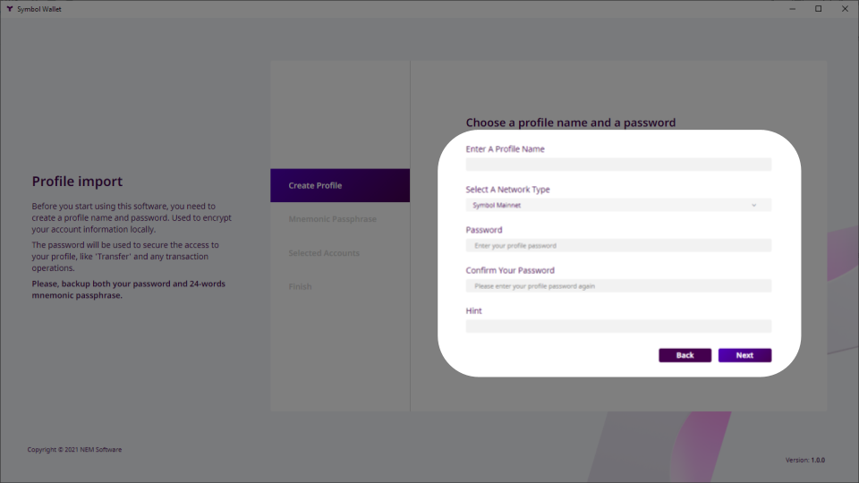
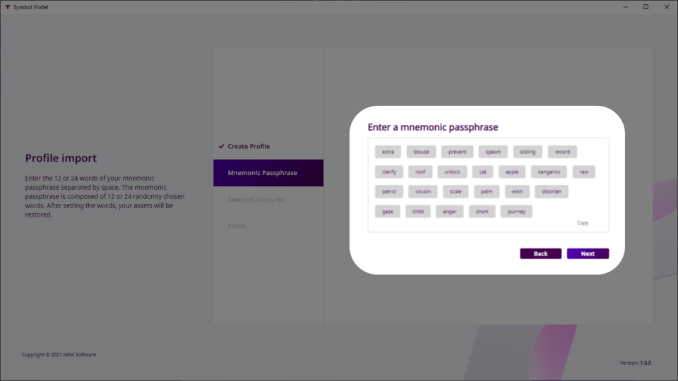
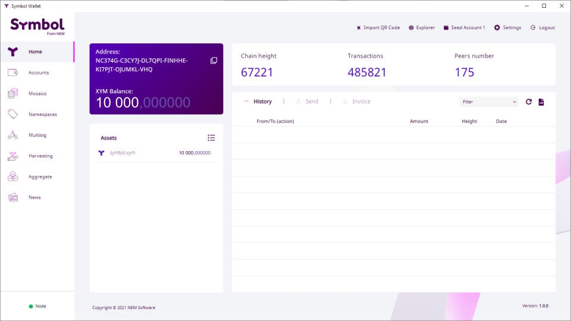

このガイドでは、 Symbol ロンチ前 (2021年3月12日) のオプトインプロセスに登録した場合に、あなたにへ授与された XYM (Symbol の基軸通貨) へのアクセス方法を説明します。
それを見過ごしていた場合は Retrieving your XYM from a post-launch opt-in ガイドに従って、オプトインすることもできます。
NEM NIS1 はコミュニティによって作成された NEM のオリジナルブロックチェーン オファリングであり、2015 年から稼働を続けています。
Symbol は NEM の次世代ブロックチェーン であり、ゼロから書き直され、2021 年 3 月にローンチされました。
To quickstart Symbol's adoption, an opt-in process was established which awarded one XYM in the new Symbol blockchain for every XEM (NIS1's native currency) held in the NIS1 blockchain.

First off, XEM holders wishing to participate in the opt-in process had to enroll using any of the NEM Wallets. For example, using the Desktop NEM Wallet.

In return, the user received a Symbol Mnemonic, a 24-word phrase which encoded a Symbol account for the future Symbol blockchain.
これは Symbol ニーモニックを含む NEM Wallet が作成した例です。
Then, on March 12th, 2021 the NIS1 Snapshot took place: When the NIS1 blockchain reached block height 3'105'500 a picture was taken of all accounts and their assets.
Finally, on March 16th, 2021 the Symbol blockchain was launched and all opted-in accounts were automatically created:
For every opted-in NIS1 account that held at least 100 XEM at the snapshot, a Symbol account was created holding that same amount of XYM.
このガイドでは、この新しい Symbol アカウントとそのアセットにアクセスする方法について説明します。
注釈
If you did not opt-in before the new Symbol blockchain launched, you can still opt-in post-launch by following the Retrieving your XYM from a post-launch opt-in guide.
あなたのプラットフォーム向けの Symbol Desktop Wallet を ダウンロードしてインストール します。
これは NIS1 ブロックチェーンとの疎通に使用される NEM ウォレットとは異なることに注意してください。
ウォレットを開いて 新しいプロファイルを作成? をクリックします:

Import mnemonic をクリックします:
いくつかのプロファイルデータを入力します。プロファイルには複数の Symbol アカウントを含めることができ、それらを整理するのに役立ちます。
個人的な使用目的でプロファイルに 名前 を付けます。
Mainnet ネットワークタイプ を選択します。
プロファイルを保護するために パスワード を入力して確認します。
パスワードを忘れた場合に備えて ヒント を入力して忘れないようにしてください。
次へ をクリックします。
オプトイン (前セクションを参照) の際に取得した Symbol ニーモニック のすべての単語を書き込みます:
次へ をクリックします。
On the Selected Accounts screen, you will be presented with the list of accounts that can be derived from the mnemonic, including the one that you opted-in and its balance.

オプトイン済みのアカウントを選択します。
少なくとも一つ、別の (オプトインされていない) アカウントを選択します。
次へ をクリックします。
利用規約 に同意して 完了 をクリックします:
ウォレットのメイン画面が表示され、オプトインした残高が表示されます:
Your imported accounts are now ready to use. In the Accounts tab you can see all of them and give them more meaningful names if you want.
Take a look at the rest of the guides to learn what you can do with these accounts. For example, ２つのアカウント間でモザイクとメッセージを送信.
オプトインしたアカウントを復元する際に問題が発生した場合、確認する項目リストです。
スナップショット時点で NIS1 アカウントの残高 が少なくとも 100 XEM であったことを確認してください。
Check that you are using the correct Symbol mnemonic. Did you do several attempts at opting-in and obtained different mnemonics?
NEM ヘルプデスク は他のすべてが失敗した場合に役立ちます:
メールは support@nem.group に送信してください
 Last updated by
Last updated by {kind=link}
{kind=link}
{kind=link}
{kind=link}
{kind=link}